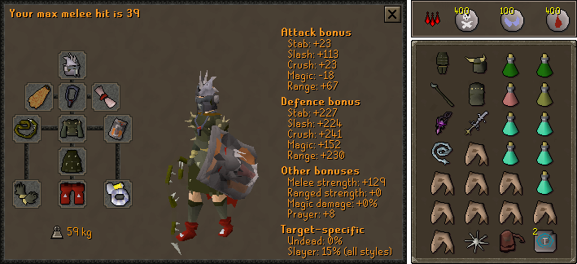

Potion Sharing Attacker

Arclight > Abyssal tentacle > Abyssal whip > Abyssal bludgeon > Godsword
Toxic staff of the dead > Staff of the dead > Zamorakian hasta > Abyssal whip* > Abyssal dagger
Dragon warhammer > Toxic staff of the dead > SGS = Crystal halberd > BGS > Abyssal dagger = Dragon halberd > AGS > Dragon dagger
Dragon defender > Rune defender > Toktz-ket-xil
Slayer** > Serpentine > Warrior > Fighter > Neitiznot > Berserker > Verac's
Bandos chestplate > Fighter torso > Verac's > Other barrows
Bandos tassets > Verac's > Other Barrows
Primordial > Dragon
Barrows > Dragon > Rune > Adamant > Regen bracelet > Combat bracelet
Fire > Ardougne 2+ = Skillcape (t) > God cloak > Obsidian > Legend's
Torture > Fury > Glory
Warrior (i) = Berserker (i) > Ring of the gods (i) > Warrior = Berserker > Explorer's > Life
Unholy blessing > Other blessings
Notes
- The tank will bring super combat potions to give you.
- The main hand switch is used to not degrade your primary weapon on minions and kill count.
- *If using an Unholy Blessing, the Abyssal Whip is the best for a main hand switch.
- **Use on a Greater Demon or K'ril Tsutsaroth slayer task.
Attacker - Alcher

Notes
- Same as Potion Sharing Attacker, but with more boosting potions
Tank - Melee Defense (Pray Magic)

Arclight > Abyssal tentacle > Abyssal whip
Toxic staff of the dead > Staff of the dead > Zamorakian hasta > Abyssal whip* > Abyssal dagger
Dragon warhammer > Toxic staff of the dead > SGS > Crystal halberd > BGS > Abyssal dagger = Dragon halberd > AGS > Dragon dagger
Elysian > Dragonfire shield > Crystal shield > Blessed spirit shield = Arcane = Spectral > Dragon Sq
Dragon defender
Slayer** > Serpentine > Verac's > Guthan's > Torag's = Dharok's > Neitiznot
Bandos chestplate = Guthan's > Dharok's = Torags > Verac's
Bandos tassets = Verac's > Dharok's = Torag's > Guthan's
Primordial > Dragon > Bandos
Barrows > Dragon > Rune > Adamant > Regen bracelet > Combat bracelet
Fire > Ardougne 2+ = Skillcape (t) > God cloak > Obsidian > Legend's
Fury > Torture > Glory
Warrior (i) > Berserker (i) > Ring of suffering (i) > Warrior > Berserker > Ring of the gods (i) > Explorer's > Life
Unholy blessing > Other blessings
Notes
- The main hand switch is used to not degrade your primary weapon on minions and kill count.
- *If using an Unholy Blessing, the Abyssal Whip is the best for a main hand switch.
- **Use on a Greater Demon or K'ril Tsutsaroth slayer task.
Tank - Magic Defense (Pray Melee)

Arclight > Abyssal tentacle > Abyssal whip
Toxic staff of the dead > Staff of the dead > Zamorakian hasta > Abyssal whip* > Abyssal dagger
Dragon warhammer > Toxic staff of the dead > SGS > Crystal halberd > BGS > Abyssal dagger = Dragon halberd > AGS > Dragon dagger
Elysian > Spectral > Dragonfire shield > Arcane > Crystal shield > Blessed spirit shield > Dragon sq
Dragon defender
Slayer** > Serpentine > Verac's > Guthan's > Torag's = Dharok's > Neitiznot
Karil's > Blessed d'hide
Karil's > Blessed d'hide
Primordial > Dragon > Bandos
Barrows > Dragon > Rune > Adamant > Regen bracelet > Combat bracelet
Fire > Ardougne 2+ = Skillcape (t) > God cloak > Obsidian > Legend's
Fury > Torture > Glory
Warrior (i) > Berserker (i) > Ring of suffering (i) > Warrior > Berserker > Ring of the gods (i) > Explorer's > Life
Unholy blessing > Other blessings
Notes
- The main hand switch is used to not degrade your primary weapon on minions and kill count.
- *If using an Unholy Blessing, the Abyssal Whip is the best for a main hand switch.
- **Use on a Greater Demon or K'ril Tsutsaroth slayer task.